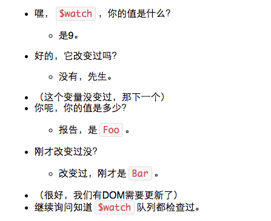

分享人：李维文
目录
1.背景介绍
2.如何绑定
3.如何实现
4.常见问题
5.解决方案
6.更多讨论
7.参考文献
Angular实现了双向绑定机制
所谓的双向绑定，无非是从界面的操作能实时反映到数据，数据的变更能实时展现到界面
bind-show众所周知，angular是一个MVVM（Model-View，View-Model）模式的框架，可以实现数据和视图数据绑定。MVVM把数据加工的任务从Controller中解放了出来。使得Controller只需专注于数据调配的工作。
View是angularjs编译html后呈现出来的，需要编译的是controller中的定义的属性和方法以及directive中定义的指令。
View和controller是独立开来的，他们之间的纽带就是图中间的胶水——scope。Controller负责向scope中提供属性和方法，便于和view层面的html进行交互。
Angular双向绑定通过$watch,$digest，$apply实现的。
watch监控model中是否有变化，会记录last值，也就是改变后的值，每一个model都会增加一个watch到watch队列中。
当浏览器接收到可以被angular context处理的事件时，$digest循环就会触发，这个循环有两个子循环，一个处理evalAsync队列，另一个处理watch队列，$digest会遍历$watch,然后询问：
既然所有的$watch都检查完了，那就要问了：有没有$watch更新过？如果有至少一个更新过，这个循环就会再次触发，直到所有的$watch都没有变化。这样就能够保证每个model都已经不会再变化。记住如果循环超过10次的话，它将会抛出一个异常，防止无限循环。 当$digest循环结束时，DOM相应地变化。
这个就是所谓的dirty-check，angular实际会引入了一个初始值为false的dirty变量作为循环条件，如果有改变过（也就是新旧值不相等），dirty变为true，循环继续。这里很重要的（也是许多人的很蛋疼的地方）是每一个进入angular context的事件都会执行一个$digest循环，也就是说每次我们输入一个字母循环都会检查整个页面的所有$watch。
那是什么决定一个事件是否进入angular context呢？
答案是$apply
我之前碰到过在angular中使用普通的事件，无法双向绑定的事情。
app.directive('clickable', function() {
return {
restrict: "E",
scope: false,
template: '- {{foo}}
- {{bar}}
',
link: function(scope, element, attrs) {
element.bind('click', function() {
scope.foo++;
});
}
}
});
app.controller('MainCtrl', function($scope) {
$scope.foo = 0;
});
这里值虽然改变了，但是没有强制执行$degest,监视foo和bar的watch根本没有执行，执行一次apply之后，watch就会知道这些变化，更新dom了。
这里只需要加上scope.$apply()就行了。
一般带ng的事件angular都会给你自动添加好了apply，所以你要操纵事件的时候加上aplly才能实现数据输出到view层中。
$digest和$apply有何区别？干嘛不直接使用$digest?
1.$apply可以带参数，它可以接受一个函数，然后在应用数据之后，调用这个函数。
2.当调用$digest的时候，只触发当前作用域和它的子作用域上的监控，但是当调用$apply的时候，会触发作用域树上的所有监控。
demo提问环节
感谢大家观看
BY : 刘天云 |李维文